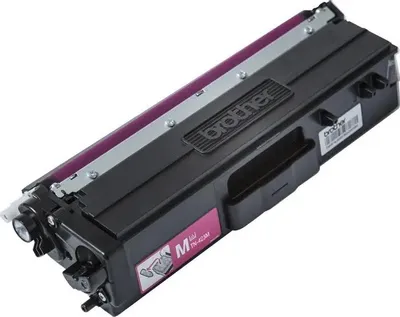
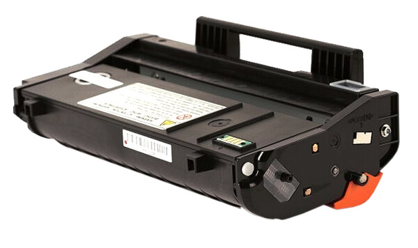

Сервисный центр заправляет картриджи лазерных и струйных принтеров HP, Canon, Brother, Kyocera, Ricoh, Pantum и других. Диагностика, полная разборка, засыпка тонера, замена изношенных деталей и чипа, обязательный тест печати перед выдачей. От 450 ₽, срок один рабочий день, для организаций по договору.
Цена зависит от бренда, ресурса картриджа и необходимости замены деталей и чипа. Точная стоимость после диагностики: на неё влияет объём бункера, замена фотовала или ракеля и тип тонера.
| Услуга | Стоимость | Срок |
|---|---|---|
| Картриджи HP | от 450 ₽ | 1 рабочий день |
| Картриджи Canon | от 450 ₽ | 1 рабочий день |
| Картриджи Brother, сброс счётчика тонера включён | от 450 ₽ | 1 рабочий день |
| Картриджи Ricoh | от 450 ₽ | 1 рабочий день |
| Картриджи Kyocera | от 850 ₽ | 1 рабочий день |
| Картриджи Pantum, Xerox, Samsung и других брендов | по модели | 1 рабочий день |
| Замена чипа | по модели | вместе с заправкой |
| Замена фотобарабана, ракеля, магнитного вала | по диагностике | согласуем до работ |
| Ремонт оргтехники и компьютерной техники | от 1 000 ₽ | по диагностике |
Дата готовности согласуется заранее, чтобы офисная техника не простаивала. Договор, счёт, акт и полный пакет закрывающих документов. Бюджетным учреждениям: подстатья 225 КОСГУ.
Согласовать графикТонер подбирается под конкретную модель: марка порошка влияет на плотность печати, сыпучесть и ресурс фотобарабана. Картриджи с учётом отпечатанных страниц заправляются с заменой чипа.
 HPсерии CF и CE, 305, 106A. От 450 ₽
HPсерии CF и CE, 305, 106A. От 450 ₽
 Canon725, 737, серия FX. От 450 ₽
Canon725, 737, серия FX. От 450 ₽

Brotherсерия TN, сброс счётчика. От 450 ₽ Kyoceraсерия TK для офисных МФУ. От 850 ₽
Kyoceraсерия TK для офисных МФУ. От 850 ₽

Ricohсерия SP. От 450 ₽ PantumPC-211, PC-211EV, PC-230, M6500, P2200. По модели
PantumPC-211, PC-211EV, PC-230, M6500, P2200. По модели
Заправка картриджа Pantum PC-211 и совместимых PC-211EV и PC-230 самая востребованная в офисах Тюмени: требует обязательной замены чипа, иначе принтер продолжит показывать нулевой ресурс. Струйные картриджи со встроенной печатающей головкой имеют ограниченный ресурс, целесообразность заправки показывает диагностика.
Работы выполняются по регламенту. Если диагностика показывает необходимость ремонта, его объём и стоимость согласовываются до начала работ. Ремонт и заправка в одном сервисном центре, дополнительная транспортировка не требуется.
Проверяем корпус, фотовал, ракель и магнитный вал, снимаем тест печати до начала работ.
Полностью разбираем картридж, бункер отработки очищаем от остатков тонера.
Продувка, чистка дозирующего лезвия и контактных групп.
Порошок под конкретную модель, норма засыпки контролируется по весу.
При износе меняем фотобарабан, ракель и магнитный вал; чип обнуляем или ставим новый.
Каждый картридж проходит контрольную печать, лист прикладываем при выдаче.
Для офиса, расходующего два или три картриджа в месяц, разница за год превращается в существенную экономию. Результат диагностики показывает, какой вариант целесообразен.
График для партий строится так, чтобы офисная техника работала без простоя.
Полосы, бледная печать или «принтер не видит картридж» после заправки: принимаем на разбор по гарантии.
О таких случаях предупреждаем на диагностике до начала работ.
Обслуживание проводится только в сервисном центре, выездная диагностика не предоставляется.
 Открыть в Яндекс Картах: маршрут до ул. 50 лет ВЛКСМ, 16
Открыть в Яндекс Картах: маршрут до ул. 50 лет ВЛКСМ, 16
Для запуска собрать отзывы с Яндекс Карт и 2ГИС по адресу и добавить ответы сервиса.
Отзыв: партия картриджей для офиса, срок, качество печати, документы.
Отзыв: Brother, сброс счётчика, всё заработало.
Отзыв: Kyocera TK, замена ракеля по диагностике, предупредили заранее.
Треть запросов направления информационные: «почему после заправки печатает полосами», «как сбросить счётчик Brother», «по какому КОСГУ». Ответы на странице дают расширенный сниппет и закрывают эти запросы.
Укажите модель принтера или картриджа и количество, ответим с ценой и датой готовности. Организациям оформим договор и закрывающие документы.